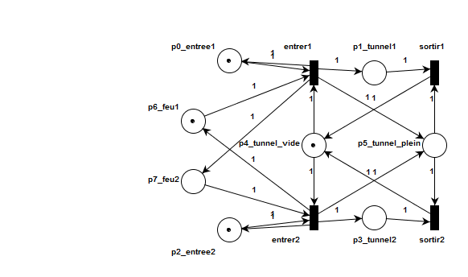
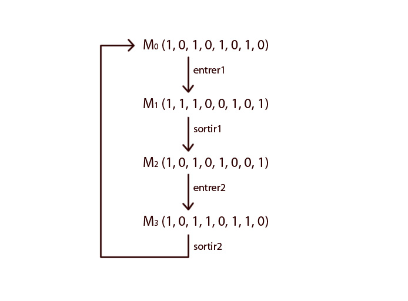

Design logiciel
Diagramme de classe pour le patron de fabrique

Diagramme de séquence ou de collaboration pour le patron de fabrique ALLO ALLO
Diagramme de classe pour le patron du singleton
Diagramme de classe pour le patron d'état
Diagramme de séquence ou de collaboration pour le patron d'état
Diagramme de classe pour le patron de l'observateur
Diagramme de séquence ou de collaboration pour le patron de l'observateur
Diagramme de classe pour le patron de commande
Diagramme de séquence ou de collaboration pour le patron de commande
Diagramme de classe pour le patron du visiteur
Diagramme de paquets

Qualité du design
blabla
Implémentation du système en Java
Réseau de Pétri
Modélisation
Pour des raisons de concision, les deux voies du tunnel seront identifiées comme voie 1 et voie 2.
Les places p0_entree1 et p2_entree2 représentent les entrées de la voie 1 et de la voie 2 du tunnel. P1_tunnel1 et p3_tunnel2 représentent respectivement la présence d’une voiture dans le tunnel sur la voie 1 ou sur la voie 2. P4_tunnel_vide et p5_tunnel_plein modélisent l’état du tunnel, selon si une voiture y est présente ou pas. P6_feu1 et p7_feu2 représentent le feu de circulation à l’entrée du tunnel, donnant accès à la voie 1 ou la voie 2 respectivement. Les transitions entrer1 et entrer2 représentent l’action d’une voiture d’entrer dans le tunnel sur la voie 1 ou 2. Sortir1 et sortir2 représentent l’action de sortir du tunnel pour leurs voies respectives.
Analyse du réseau
Afin d’effectuer l’analyse du réseau, on construit d’abord son graphe d’accessibilité. Soit M0 l’état initial du réseau tel que représenté sur le diagramme du réseau.
(Les éléments des vecteurs d’état du réseau sont ordonnés selon l’ordre des "pi_" des identifiants des places.)
À partir du graphe d’accessibilité, on cherche l’équation de conservation du réseau. Aux états M0 et M2, le réseau a un total de 4 jetons. Aux états M1 et M3, il en contient 5. On trouve ainsi la somme pondérée suivante:
p0_entree1 + p1_tunnel1 + p2_entree2 + p3_tunnel2 + 2*p4_tunnel_vide + p5_tunnel_plein + p6_feu1 + p7_feu2 = 5
Le réseau est donc conservateur pour le vecteur de pondération 𝛾 = (1, 1, 1, 1, 2, 1, 1, 1).
On s’intéresse plus particulièrement au nombre de jetons possibles aux places p1_tunnel1 et p3_tunnel2 pour un état donné. Puisque le réseau est conservateur, il maintient un nombre constant de jetons pour tous ses états atteignables. De plus, les états M1 et M3 du graphe d’accessibilité montrent que la présence de jeton à p1_tunnel1 et p3_tunnel2 est mutuellement exclusive. Puisqu’il ne peut y avoir de jetons qu’à p1_tunnel1 ou p3_tunnel2 à un état donné et que le nombre de jetons pour ses places est égal ou inférieur à 1, il ne peut y avoir plus d’une voiture présente à la fois dans le tunnel et la contrainte b de l’énoncé est satisfaite
Puisque le réseau est borné, son graphe de couverture est identique au graphe d’accessibilité. On s’intéresse aux transitions de ce graphe : d’abord, on observe que chaque état mène exactement à un seul nouvel état possible, et que l’enchaînement des transitions forment un cycle. À partir de l’état initial M0, une voiture peut entrer dans le tunnel sur la voie 1 par la transition entrer1. Cependant, il faudra que le graphe exécute un cycle complet et revienne à l’état M0 avant qu’une seconde voiture puisse entre sur la voie 1. L’exécution de ce cycle permettra à une voiture de la voie 2 d’entrer dans le tunnel à l’état M2. Ainsi, au plus une voiture peut entrer dans le tunnel dans une direction donnée avant qu’une voiture ne puisse entrer dans l’autre direction. La séquence des transitions est donc ordonnée par le système et est équitable, satisfaisant la contrainte c de l’énoncé.
De plus, la séquence de transitions étant équitable et sachant que le temps d’attente d’une voiture pour entrer dans le tunnel pour une voie donnée est d’au plus le temps de passage d’une voiture dans le tunnel dans l’autre direction, le temps d’attente d’une voiture est borné et le système ne souffre donc pas de problème de famine.
Séparation des tâches:
Vivianne Nguyen-Dong (~10-15h)
- Diagramme de classes
- Patrons de conception
- Discussion sur la qualité du design
- Implémentation en Java
Idole Koun(~10-15h)
- Diagramme de classes
- Patrons de conception
- Implémentation en Java
- Réseau de Pétri
- Implémentation en Java